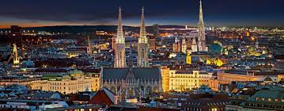

Paryż
Paryż to najpiękniejsza stolica na świecie i najludniejsze miasto Francji. Położone jest w północnej części kraju, w centrum Basenu Paryskiego, nad Sekwaną. Stanowi centrum polityczne, ekonomiczne i kulturalne kraju.
Ciekawostka:
Wieża Eiffla: Symbol Paryża i Francji, wieża Eiffla została zbudowana w 1889 roku jako główna atrakcja Wystawy Światowej w Paryżu. Zaprojektowana przez Gustawa Eiffla, pierwotnie miała być tymczasową konstrukcją, ale zachwyciła wszystkich swoją imponującą strukturą i pozostała na stałe.

Wenecja
Wenecja to miasto i gmina na północy Włoch nad Morzem Adriatyckim, stolica regionu Wenecja Euganejska. Z okresu największego rozkwitu Republiki (XIII-XVI wiek) pochodzą liczne zabytki miasta, których bogactwo i forma decyduje o pierwszorzędnym znaczeniu Wenecji jako ośrodka turystyki nie tylko w skali Włoch, ale też w skali ogólnoświatowej.
Ciekawostka:
Miasto na wodzie: Wenecja jest znana jako "Miasto na Wodzie" ze względu na swoją unikalną lokalizację i architekturę. Zbudowana na ponad 100 małych wysepkach, miasto jest położone na lagunie Adriatyku i jest połączone siecią kanałów, zamiast tradycyjnych ulic. To sprawia, że jest to jedyne miasto na świecie, gdzie nie ma samochodów ani ulic, a transport odbywa się głównie za pomocą łodzi.


Wiedeń
Wiedeń to stolica i największe miasto w Austrii położone w północno-wschodniej części kraju, nad Dunajem oraz miasto statutarne tworzące jednocześnie odrębny kraj związkowy.
Ciekawostka:
Wiedeń jest uznawany za jedno z najważniejszych miast muzycznych na świecie. To tutaj narodziło się wiele znakomitych kompozycji i utalentowanych kompozytorów, takich jak Ludwig van Beethoven, Wolfgang Amadeus Mozart, Johann Strauss i wielu innych. Wiedeń jest także siedzibą słynnej Wiedeńskiej Filharmonii oraz Opery Wiedeńskiej, jednej z najbardziej prestiżowych instytucji operowych na świecie. Miasto jest pełne muzeów, pomników i dziedzińców, które upamiętniają jego bogate dziedzictwo muzyczne, co czyni je prawdziwym rajem dla miłośników muzyki klasycznej.
Madryt
Madryt to stolica i największe miasto Hiszpanii, położone w środkowej części kraju, na Wyżynie Kastylijskiej, u podnóża Sierra de Guadarrama, nad rzeką Manzanares.
Ciekawostka:
W Madrycie znajduje się najstarsza restauracja na świecie, zgodnie z wpisem w Księdze Rekordów Guinnessa. Nazywa się "Restaurante Botín" i została założona w roku 1725. Jest nadal czynna i serwuje tradycyjne hiszpańskie dania, przyciągając zarówno lokalnych mieszkańców, jak i turystów chcących spróbować autentycznej kuchni Madrytu.
Porto
miasto położone w północnej części Portugalii, nad Oceanem Atlantyckim, u ujścia rzeki Duero[2] (port. Douro). Druga co do wielkości metropolia w państwie, po Lizbonie. W gminie Porto mieszkało 231 800 mieszkańców, zespół miejski zamieszkiwało w 2014 roku 1 496 000 mieszkańców, natomiast w całej metropolii mieszka 1 762 524 mieszkańców.
Ciekawostka:
Porto słynie z produkcji jednego z najbardziej znanych win na świecie - wina Porto. To wino jest wytwarzane w regionie Douro Valley, a proces produkcji obejmuje m.in. fermentację gron wina w obecności spirytusu, co daje mu unikalny smak i aromat.